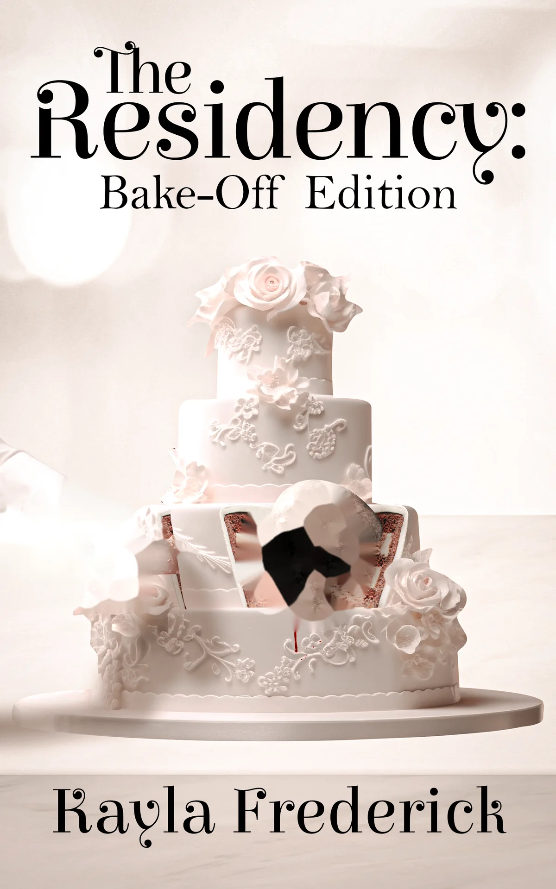
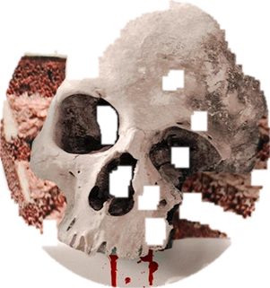
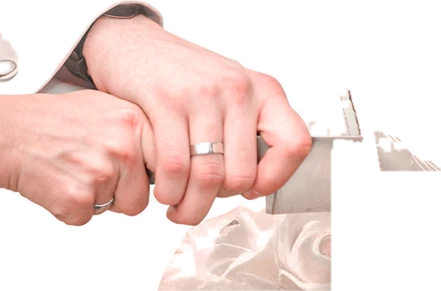
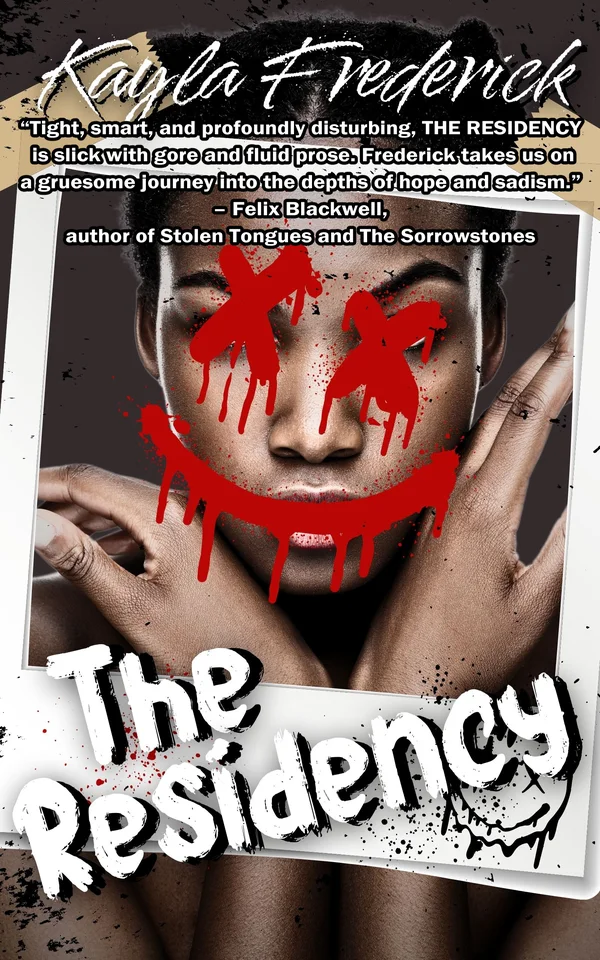
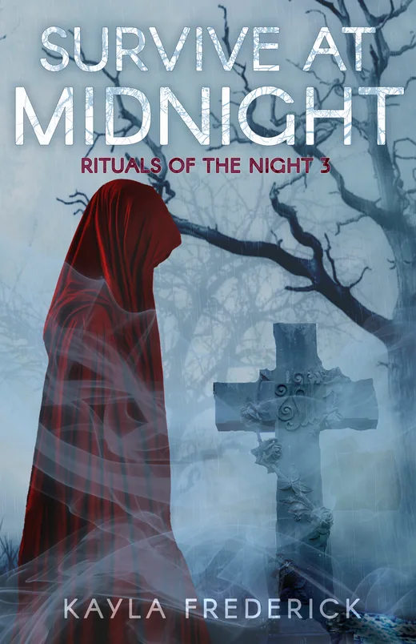
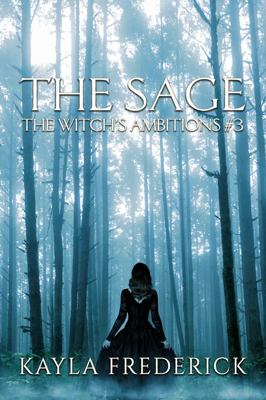

A homepage idea made by Sparsh Saini for Kayla Frederick. Not their official site.



Kayla Frederick
Ira survived the Curator's games. Now she is hosting them. The sequel to The Residency, open for preorder.

8 artists. 1 art residency. 1 chance to leave alive.
Art is pain. Or so they say. A varied group of struggling artists in New York City is each desperate to get their shot at the big time. When they receive an invitation to a week-long art residency on a private island in the Bahamas, they leap at the chance.
But something is off about Turquoise Bay and its owner, the Curator. When the artists end up locked in an underground bunker, the only way out is to play the Curator's games. Will they survive? Or will they die for their art?
"Tight, smart, and profoundly disturbing, The Residency is slick with gore and fluid prose. Frederick takes us on a gruesome journey into the depths of hope and sadism."
Felix Blackwell, author of Stolen Tongues

Death doesn't always bring peace. In the wake of Chance Welfrey's death, Luna Ketz is rebuilding her life, but the ghosts of her family and friends refuse to let her go, and Chance's buried secrets begin to surface.
Preorder
The final battle approaches. With only two Covens still standing and a mysterious illness killing witches, Lilith, the Sage's ex-apprentice, is the Elemental Coven's last hope.
PreorderConfirmed dates for the rest of 2026. Events may be added or taken off the list.
Can't make it? Signed books are in the Etsy shop while stock lasts.
Raised in Michigan but moved to Texas, Kayla has experienced the best and worst of both. She has interests in the dark and macabre and enjoys 80s music and movies. A little neurotic and a huge lover of Halloween, creepy stories and cats are totally her jam.